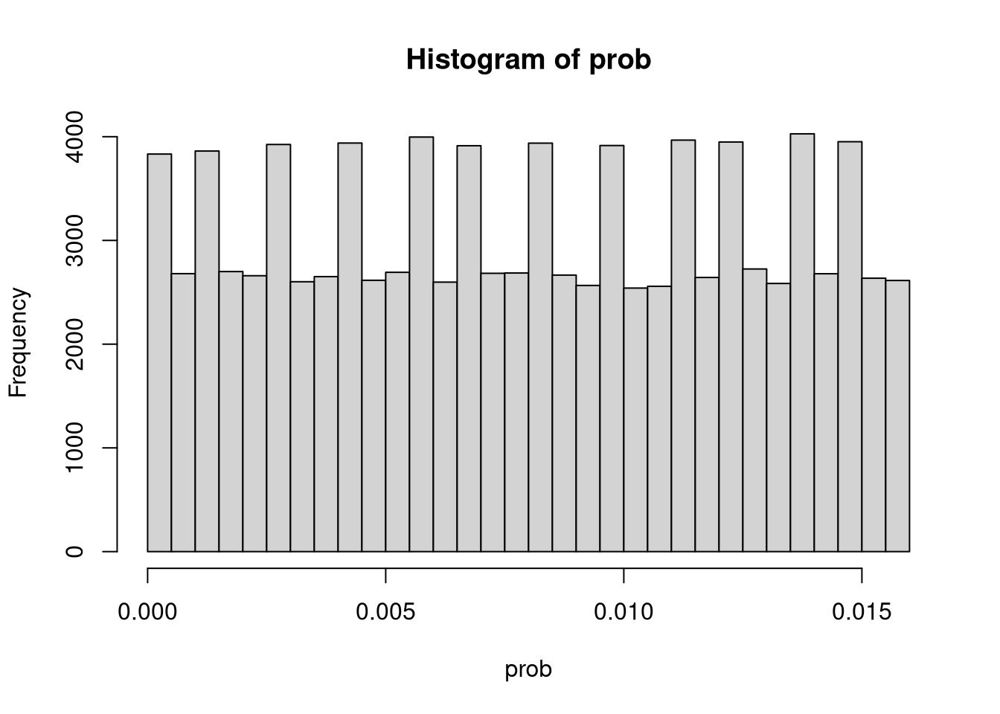

Min. 1st Qu. Median Mean 3rd Qu. Max.
0.000000 0.004035 0.007842 0.007947 0.012056 0.015832 Miksi Suomi on maailman onnellisin – tilastollinen selitys
Maailman onnellisin valtio-tutkimuksen läpikäyntiä
Johdanto
World Happiness Report nostaa Suomen toistuvasti maailman kärkeen.
Keskustelu kääntyy nopeasti siihen, miksi tulos ei voi pitää paikkaansa.
Yleisimmät perustelut ovat:
- “Ei minulta kysytty”
- “Tunnen monia, jotka eivät ole onnellisia”
- “Suomessa on paljon ongelmia”
Nämä argumentit eivät ole tilastollisesti relevantteja.
Tässä kirjoituksessa puretaan, mitä tutkimus mittaa, miten se tehdään ja miksi otanta riittää.
Mitä tutkimus mittaa
Tutkimus ei mittaa hetkellistä tunnetta.
Se mittaa elämäntyytyväisyyttä asteikolla 0–10.
Kyse on kokonaisarviosta:
- elinolosuhteista
- turvallisuudesta
- terveydestä
- mahdollisuuksista
Tämä tekee mittarista ajassa melko vakaan.
Se ei reagoi yhtä herkästi yksittäisiin tapahtumiin kuin mielialamittarit.
Mistä data tulee
Aineisto perustuu kansainväliseen kyselyyn, jossa:
- otos on noin 1000 henkilöä per maa
- otanta on satunnainen
- kohdejoukko on yli 15-vuotiaat
Suomen väestö (15+) on noin 4,7 miljoonaa.
Tästä poimitaan edustava otos.
Keskeinen kysymys kuuluu:
Riittääkö tämä?
Miksi otanta riittää
Tilastollinen päättely perustuu siihen, että satunnainen otos edustaa populaatiota.
Virhemarginaali voidaan approksimoida:
\(\pm 1.96 \cdot \sqrt{\frac{p(1-p)}{n}}\)
Kun \(n = 1000\), virhe on tyypillisesti noin ±3 prosenttiyksikköä.
Populaation koko ei juuri vaikuta tähän.
Ratkaisevaa on otoksen koko.
Simulaatio: kuinka hyvin otos toimii
Simuloidaan tilanne, jossa:
- populaation koko: 4 700 000 (Suomen yli 15-vuotiaat)
- todellinen keskiarvo: 7.5
- hajonta: 1.2
Poimitaan toistuvasti 1000 hengen otoksia ja tarkastellaan, miten hyvin ne osuvat oikeaan keskiarvoon.
Tulkinta
Keskiarvoksi saadaan 7.500014 ja keskiharjonnaksi 0.0375414. Otosten keskiarvot keskittyvät tiukasti todellisen arvon ympärille. Vaihtelu on pientä.
Tämä on keskeinen syy siihen, miksi 1000 havaintoa riittää.
Kyse on todennäköisyyslaskennasta.
Todennäköisyys päästä mukaan tutkimukseen ei ole yksi luku
Todennäköisyys riippuu siitä, kuinka monta vuotta henkilöllä on jäljellä.
Siksi kyse ei ole yhdestä luvusta, vaan jakaumasta. Tehdään siis asiasta mallinnus.
Mallinnus: eri-ikäiset suomalaiset
Oletetaan:
- kohdejoukko: yli 15-vuotiaat suomalaiset
- väestö: 4 700 000
- otos: 1000 henkilöä vuodessa
Yhden vuoden valintatodennäköisyys:
\(p = \frac{1000}{4\,700\,000}\)
Todennäköisyys tulla valituksi ainakin kerran riippuu jäljellä olevista vuosista \(T\):
\(1 - (1 - p)^T\)
Simulaatio: jakauma eri ikäisille
Simuloidaan yksinkertainen väestö:
- ikä välillä 15–90
- jokaiselle lasketaan jäljellä olevat vuodet (oletetaan maksimi-ikä 90)
Jakauma

Mitä tulos kertoo Suomesta?
Suomen korkea sijoitus liittyy rakenteellisiin tekijöihin:
*korkea luottamus yhteiskuntaan
*toimivat instituutiot
*sosiaalinen turva
*suhteellisen tasainen tulonjako
Keskeinen havainto:
Suomi ei ole äärimmäisen onnellinen yksilötasolla, vaan tasaisen hyvinvoiva populaatiotasolla.
Toisin sanoen jakauma on kapea.
Mitä tulos ei kerro
Tutkimus ei implikoi, että:
*kaikki suomalaiset ovat onnellisia
*ongelmia ei ole
*yksilön kokemus olisi väärä
Populaatiotason keskiarvo ja yksilön kokemus voivat poiketa toisistaan ilman ristiriitaa.
Menetelmän rajoitteet
Analyysi perustuu regressiomalleihin, joissa selittäjinä ovat mm.:
*tulotaso
*terveys
*sosiaalinen tuki
Rajoitteet:
*Lineaarisuus on yksinkertaistus
*Kulttuurierot vastaustavoissa voivat vaikuttaa
*Subjektiivinen mittari ei ole objektiivinen hyvinvointi
Tästä huolimatta malli selittää suuren osan vaihtelusta maiden välillä.
Yhteenveto
Keskeiset johtopäätökset:
*Otanta ei vaadi kaikkien vastaamista
*1000 havaintoa riittää populaatiotason arvioon
*Yksittäinen kokemus ei kumoa keskiarvoa
*Suomi sijoittuu kärkeen rakenteellisten tekijöiden vuoksi
Tilastotiede ei kuvaa yksilöä. Se kuvaa jakaumaa.
Juuri siksi se toimii. Tätä on tilastotiede.
Kaipaatko analyysiä tai onko sinulla projekti, jonka haluat toteuttaa? Ota yhteyttä kristian.vepsalainen@proton.me . Olen käytettävissäsi.